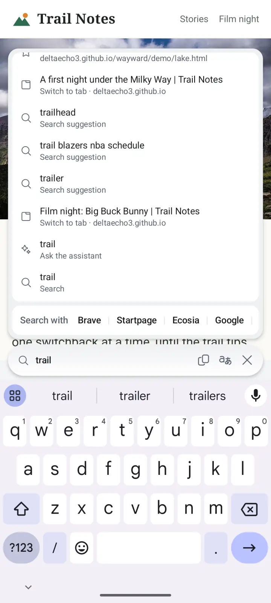
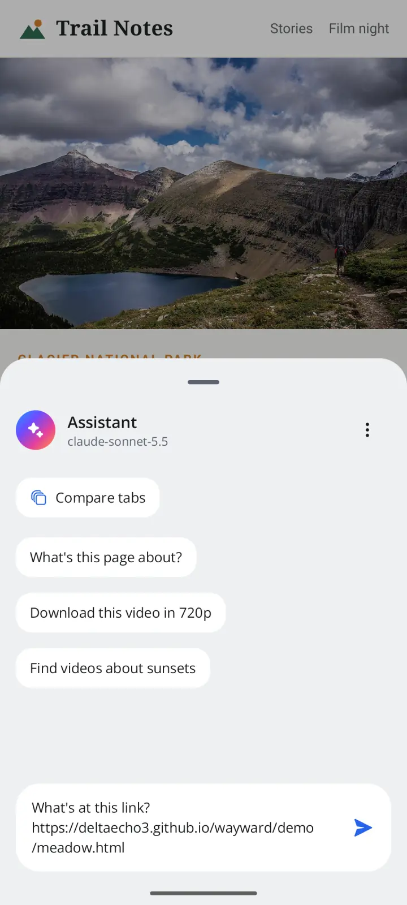
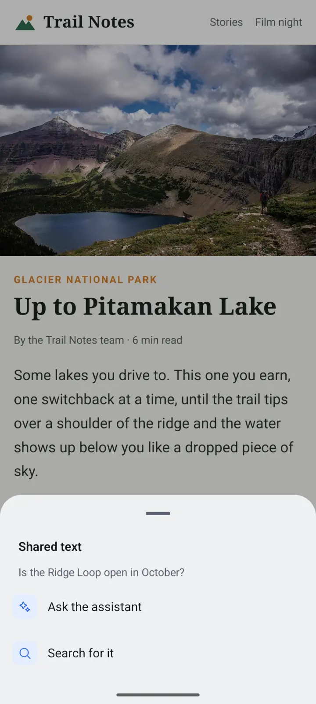
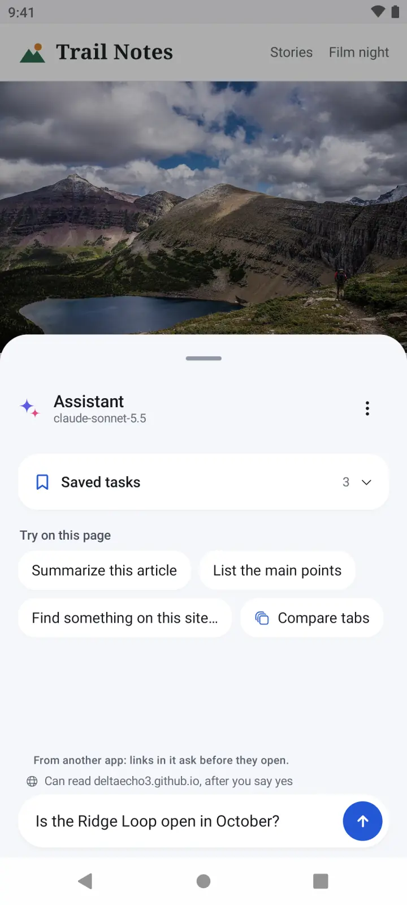

Other ways to ask the assistant
How-to
You can open the assistant from the bar, elsewhere in Wayward or from another app. None of them sends anything by itself: what you asked lands in the message box, and goes only when you tap Send.
From Wayward
- The start page's Ask AI button, and the Ask AI button on the Wayward search widget.
- The address bar: turn on Settings > AI assistant > Ask from the address bar, and while you type, the suggestions include Ask the assistant. Tap it and what you typed goes into the chat.
- A link: hold it and tap Ask AI: what's at this link?.
- A picture: hold it and tap "Search image with" (or Ask AI: search this image, if you picked the assistant for image search in Settings > Search).
- Some words on a page: select them and tap Explain. The box then holds "Explain this:" and your words.
- A link preview from another app has the assistant's button on its bar, in regular previews.


From other apps
- Share text from any app to Wayward: Shared text offers Ask the assistant.
- Select text in another app and pick Ask Wayward from its text menu. It's there once the assistant is set up with a key, and while it's on the bar.
Text that came from another app shows a note over the message box: From another app: links in it ask before they open. That's because the text isn't yours, so the assistant asks before opening any address in it.


About a video you saved
In Downloads, tap a saved video's or sound's ⋮, then Ask the assistant about it. Wayward turns its speech into text on your phone first (Ask about this file, with how far it is and a way to cancel), and nothing leaves your phone while it does. Then Share transcript? shows your question, that only the transcript goes with it (not the file or its name), your provider and the size. Tap Share to ask.
This needs on-phone transcription, which needs Android 13 or later and a speech service on your phone. Settings > AI assistant > On-phone transcription says whether yours has it.
The assistant only works in regular tabs, never in private ones.